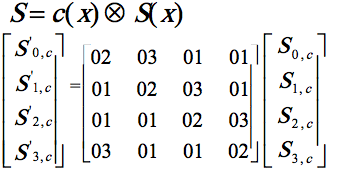

This is the transformation after ShiftRows. During the MixColums process, the four bytes of each column of the state are comined using a linear transformation that is inversible (in order to conduct the decryption). The funtion MixColumns uses as input four bytes and returns another four. It must be noted that any change in the input bytes will influence in the rest of the 4 bytes outputs.
Along with ShiftRows, MixColumns conforms the diffusion phase of the AES cipher.
Let's see how the MixColumns works in detail:
MixColumns operates columns by column of the matrix, taking each one as a polynomial of degree 3. This means that the columns are taken as polynomials in the field GF(28) (Galois Field) and each one is multiplied module x4+1 with a fixed polynomial c(x), given by:
c(x)= {03}x3 + {01}x² + {01}x + {02}
This can be clearly seen in this image:

This matrix was carefully chosen, basing on the theory of error-correcting codes.